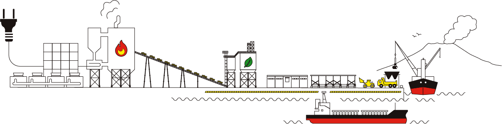

七ツ島バイオマスパワー合同会社は、株式会社ＩＨＩと地元パートナー企業の共同出資により設立されました。ＩＨＩが鹿児島市内に保有する土地の一部に建設された県内最大級のバイオマス発電所として2019 年1 月の運転開始以来、年間約337,000MWh を発電、これは一般家庭のおよそ77,000 世帯分の消費量に相当します。
発電した電力は、「電気事業者による再生可能エネルギー電気の調達に関する特別措置法」による固定価格買取制度(FIT) を利用し、20年間にわたり全量を九州電力株式会社に売電することで、電力の安定供給と年間で約200,000 トンのCO₂削減に貢献しています。
バイオマス発電は、燃料にバイオマス資源を使用します。バイオマス資源は光合成によりCO₂を吸収して成長するものなので化石燃料とくらべてCO₂排出量の削減に貢献しています。このため、地球温暖化をくいとめるクリーンで安定した電力供給源として大いに期待されています。七ツ島バイオマスパワーでは、バイオマス資源としてPKS（パーム椰子殻）、木質ペレット、木質チップを利用しております。とくに木質チップは鹿児島県産の間伐材を利用しており、地域における雇用創出、森林の保全管理にも貢献しております。
バイオマス燃料の持続可能性（合法性）確保に関する自社的取組について